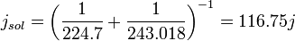

Vénus
Introduction
Vénus est une des quatre planètes telluriques du Système solaire. Elle est la deuxième planète par ordre d'éloignement au Soleil, et la sixième par masse ou par taille décroissantes.
La planète Vénus a été baptisée du nom de la déesse Vénus de la mythologie romaine.
| 1 • Présentation générale |
| 2 • Caractéristiques physiques |
| 3 • Observation |
| 4 • Exploration |
| 5 • Dans la culture |
| 6 • Notes |
1 • Présentation générale
La distance de Vénus au Soleil est comprise entre 0,718 et 0,728 UA, avec une période orbitale de 224,7 jours. Vénus est une planète tellurique, comme le sont également Mercure, la Terre et Mars. Elle possède un champ magnétique très faible et n'a aucun satellite naturel. Elle est, avec Uranus, l'une des deux seules planètes du Système solaire dont la rotation est rétrograde, et la seule ayant une période de rotation (243 jours) supérieure à sa période de révolution. Vénus présente en outre la particularité d'être quasiment sphérique — son aplatissement peut être considéré comme nul — et de parcourir l'orbite la plus circulaire des planètes du Système solaire, avec une excentricité orbitale de 0,0068 (contre 0,0167 pour la Terre).
Vénus est presque aussi grande que la Terre — son diamètre représente 95 % de celui de notre planète — et a une masse équivalente aux quatre cinquièmes de celle de la Terre. Sa surface est dissimulée sous d'épaisses couches de nuages très réfléchissants qui lui confèrent un albédo de Bond de 0,75 et une magnitude apparente dans le ciel pouvant atteindre -4,6, valeur dépassée uniquement par la Lune et le Soleil. Étant plus proche du Soleil que la Terre, elle présente des phases au même titre que la Lune et Mercure selon sa position relative par rapport au Soleil et à la Terre, son élongation ne dépassant jamais 47,8°.
L'atmosphère de Vénus est la plus épaisse de celle de toutes les planètes telluriques, avec une pression au sol atteignant 9,3 MPa (91,8 atm) au niveau de référence des altitudes vénusiennes. Cette atmosphère est composée d'environ 96,5 % de dioxyde de carbone et 3,5 % d'azote, avec de faibles concentrations de dioxyde de soufre et de divers autres gaz. Elle contient d'épaisses couches nuageuses opaques constituées de gouttelettes de dioxyde de soufre et d'acide sulfurique surmontées d'une brume de cristaux de glace d'eau qui donne à la planète son aspect laiteux lorsqu'on l'observe depuis l'espace. Ces nuages réfléchissent l'essentiel du rayonnement solaire, de sorte que la puissance solaire parvenant au sol sur Vénus représente moins de 45 % de celle reçue au sol sur Terre, et est même inférieure d'un quart à celle reçue à la surface de la planète Mars.
L'atmosphère de Vénus est près de cent fois plus massive que celle de la Terre et possède une dynamique propre, indépendante de la planète elle-même, avec une super-rotation dans le sens rétrograde en quatre jours terrestres, ce qui correspond à une vitesse linéaire au sommet des nuages d'environ 100 m/s (360 km/h) par rapport au sol. Compte tenu de sa composition et de sa structure, cette atmosphère génère un très puissant effet de serre à l'origine des températures les plus élevées mesurées à la surface d'une planète du Système solaire : près de 740 K (environ 465 °C) en moyenne à la surface — supérieures à celles de Mercure, pourtant plus proche encore du Soleil, où les températures culminent à 700 K (environ 425 °C) — et ceci bien que l'atmosphère ne laisse passer que le quart de l'énergie solaire incidente.
À cette pression (9,3 MPa) et à cette température (740 K), le CO2 n'est plus un gaz, mais un fluide supercritique (intermédiaire entre un gaz et un liquide), d'une masse volumique voisine de 65 kg/m3.
La topographie de Vénus présente peu de reliefs élevés, et consiste essentiellement en de vastes plaines a priori volcaniques géologiquement très jeunes — quelques centaines de millions d'années tout au plus. De très nombreux volcans ont été identifiés à sa surface — mais sans véritables coulées de lave, ce qui constitue une énigme — ainsi que des formations géologiques, parfois uniques dans le Système solaire telles que coronae, arachnoïdes et farra, attribuées à des manifestations atypiques de volcanisme. En l'absence de tectonique des plaques identifiée à la surface de la planète, on pense que Vénus évacue sa chaleur interne périodiquement lors d'éruptions volcaniques massives qui remodèlent entièrement sa surface, ce qui expliquerait que celle-ci soit si récente. Entre ces épisodes de volcanisme global, le refroidissement de la planète serait trop lent pour entretenir un gradient thermique suffisant dans la phase liquide du noyau pour générer un champ magnétique global par effet dynamo.
Par ailleurs, des mesures d'émissivité à 1,18 µm réalisées en 2008 ont suggéré une relative abondance des granites et autres roches felsiques sur les terrains les plus élevés — qui sont généralement les plus anciens — de la planète, ce qui impliquerait l'existence passée d'un océan global assorti d'un mécanisme de recyclage de l'eau dans le manteau susceptible d'avoir produit de telles roches. À l'instar de Mars, Vénus aurait ainsi peut-être connu, il y a plusieurs milliards d'années, des conditions tempérées permettant l'existence d'eau liquide en surface, eau aujourd'hui disparue — par évaporation puis dissociation photochimique dans la haute atmosphère — au point de faire de cette planète l'une des plus sèches du Système solaire.
La planète Vénus a été baptisée du nom de la déesse Vénus de la féminité et de l'amour physique dans la mythologie romaine. Elle était déjà connue des Babyloniens à l'Âge du bronze, associée à la déesse Ishtar de la mythologie mésopotamienne.
1.1 • Vénus, l'étoile du Berger
Lorsque Vénus est visible, elle apparaît toujours la première dans le ciel du soir et disparaît la dernière dans le ciel du matin. C’est l’astre le plus brillant du ciel, après le Soleil et la Lune. Cette particularité la rendait utile aux bergers, car ils pouvaient s’orienter en la voyant : le soir, elle se trouve toujours dans la direction ouest ; le matin, toujours vers l’est.
Néanmoins, les bergers étaient habituées à la vie en pleine nature et possédaient d’autres méthodes pour s’orienter. Une autre hypothèse est donc que l’expression "étoile du Berger" vienne plutôt de l'affection des bergers pour cet astre à force de le retrouver tous les matins ou tous les soirs. Les citadins et les fermiers, pris par leurs occupations, ne regardaient pas Vénus aussi souvent.
2 • Caractéristiques physiques
Vénus est souvent décrite comme une « sœur jumelle » de la Terre en raison de ses caractéristiques globales très proches de celles de notre planète : son diamètre vaut 95 % de celui de la Terre, et sa masse un peu plus de 80 %. Néanmoins, si sa géologie est sans doute proche de celle de la Terre, les conditions qui règnent à sa surface diffèrent radicalement des conditions terrestres, et les phénomènes géologiques affectant la croûte vénusienne semblent également spécifiques à cette planète.
2.1 • Atmosphère
L'atmosphère de Vénus est extrêmement dense. Elle se compose majoritairement de dioxyde de carbone (CO2) et d'une faible quantité d'azote. Cette atmosphère est occupée par d'épais nuages de dioxyde de soufre. Ce mélange crée le plus fort effet de serre du Système solaire, permettant d'atteindre des températures de surface tournant autour des 460 °C. La température de surface de Vénus est supérieure à celle de Mercure (420 °C), bien que Vénus se situe à près de deux fois la distance Mercure-Soleil et ne reçoive donc qu'environ 25 % de l'irradiance solaire de Mercure.
Il n'y a que très peu d'ozone présent dans l'atmosphère vénusienne et donc aucune stratosphère.
L’atmosphère vénusienne peut se diviser sommairement en trois parties : la basse atmosphère, la couche nuageuse et la haute atmosphère.
2.1.1 • Basse atmosphère
La basse atmosphère se situe entre 0 et 48 km d’altitude et est relativement transparente.
La composition de la basse atmosphère est décrite dans le tableau ci-dessous. Le dioxyde de carbone y domine largement, le gaz secondaire étant l'azote. Tous les autres sont des constituants mineurs (~300 ppm en tout).
2.1.2 • Couche nuageuse
Il y a plusieurs couches de nuages situées entre 45 km et 70 km. Cette couche nuageuse opaque réfléchit la lumière solaire, ce qui explique la brillance de Vénus et empêche d'observer directement le sol vénusien depuis la Terre.
La couche nuageuse, présente notamment du dioxyde de soufre et de l’eau (à l’état solide comme gazeux) ainsi que de l’acide sulfurique sous forme de gouttelettes. Le dioxyde de carbone y domine toujours.
- La couche inférieure ou basse atmosphère, de 31 à 51 km. De 31 à 48 km d’altitude, l’atmosphère est qualifiée de brumeuse à cause de la faible quantité de particules d’acide sulfurique qu’elle contient. Ces nuages d'acide sulfurique sont visibles depuis le sol comme des rubans de vapeur jaunis par le soufre qu'ils contiennent ;
- La couche centrale ou principale de 51 à 52 km d’altitude, relativement claire ;
- La couche supérieure ou haute de 52 à 68 km d’altitude. De 52 à 58 km d’altitude, elle consiste notamment en des gouttelettes d’acide sulfurique et d'acide chlorhydrique ainsi que des particules de soufre (liquides comme solides). Les gouttelettes d'acide sulfurique sont en solution aqueuse, constituées à 75 % d'acide sulfurique et à 25 % d'eau. Enfin, la plus haute partie de la couche supérieure, de 58 à 68 km d’altitude, consisterait en une brume de cristaux de glace. Ce sont ces cristaux qui donnent à Vénus son apparence « laiteuse » vue depuis la Terre.
2.1.3 • Haute atmosphère
La haute atmosphère se situe entre 68 et 90 km d’altitude. Elle est principalement composée de dioxyde de carbone, qui y est majoritaire à plus de 96 %, le reste étant principalement du diazote (~3,5 %). Il s'y trouve aussi des traces de monoxyde de carbone.
On y retrouve des nuages formés de gouttelettes d'acide sulfurique à 70 km.
2.2 • Surface
Vénus ayant un aplatissement nul, les altitudes y sont définies par rapport au rayon moyen volumétrique de la planète, qui vaut 6 051,84 km. C'est une planète au relief assez peu accidenté : les quatre cinquièmes de sa surface sont recouverts de plaines volcaniques à faible pente. La surface vénusienne est principalement occupée à hauteur de 70 % par de vastes plaines sans grand relief. Baptisées planitiae en géomorphologie planétaire, les principales d'entre elles ont reçu un nom dans le cadre de la nomenclature maintenue par l'UAI, comme Atalanta Planitia, Guinevere Planitia ou encore Lavinia Planitia. Elles sont parsemées de grands bassins (de 400 à 600 km de diamètre) peu profonds (de 200 à 700 m) qui seraient des vestiges de cratères anciens.
Ces plaines, de nature a priori volcanique, se creusent par endroits jusqu'à 2 900 m sous le niveau moyen de la surface, au niveau de dépressions couvrant environ un cinquième de la surface de la planète.
- Ishtar Terra, dans l’hémisphère nord de Vénus, dans les régions polaires. Ses dimensions de 3 700×1 500 km sont un peu supérieures à celles de l’Australie. Il s'agit d'un ensemble géologique essentiellement volcanique à l'ouest, avec notamment la très remarquable formation baptisée Lakshmi Planum, et orogénique à l'est, où se trouve Skadi Mons, point culminant de la planète à 10 700 m, dans la chaîne des Maxwell Montes, puis l'immense Fortuna Tessera qui est une région de terrains typiquement vénusiens ;
- Aphrodite Terra, trois fois plus étendue mais aux reliefs bien moins élevés, située le long de l’équateur essentiellement dans l'hémisphère sud. Il s'agit de fragments de plateaux dans un ensemble de tesserae prolongé au sud-est et surtout au nord-est par des coronae et des volcans, parmi lesquels Maat Mons, le plus haut volcan vénusien.
D'autres régions élevées, de moindre importance, existent également. C'est le cas d’Alpha Regio, une série de cuvettes, d'arêtes, et de plis qui s'agencent dans toutes les directions avec une altitude moyenne de 1 à 2 km ; ou encore de Beta Regio, remarquable puisqu'on y aurait trouvé de hautes formations volcaniques dont certains sommets, récents, dépasseraient 5 000 m d'altitude.
Vénus possède également des structures planétaires rares, les couronnes. Ce sont d'énormes ravins circulaires entourant une sorte de plateau.
2.3 • Géologie
Vénus ressemble à la Terre par sa taille (6 051 km de rayon contre 6 378 km pour la Terre) et par sa densité (5,26 contre 5,52). Plusieurs auteurs supposent que les deux planètes ont une structure interne comparable.
2.3.1 • Croûte
La croûte silicatée, de 20 km d'épaisseur environ, serait plus épaisse que la croûte océanique terrestre (moyenne de 6 km), mais plus fine que la croûte continentale terrestre (moyenne de 30 km). La taille de la croûte vénusienne a été déduite des nombreux épanchements de lave constatés autour des cratères d'impact. Cette croûte ne représenterait que 0,34 % du rayon de la planète et les analyses faites par les différentes sondes Venera ont prouvé que le matériau extérieur de Vénus est semblable au granite et au basalte terrestre (roches riche en silice et ferromagnésiennes). Le système de plaques continentales y serait moins complexe que sur Terre : les roches plus plastiques absorbent fortement les effets de la dérive des continents. Ainsi, Vénus n'a pas de plaques tectoniques comme celles de la Terre.
Cette différence fondamentale entre la géologie des deux planètes telluriques les plus ressemblantes, peut être attribuée à leur évolution climatique divergente. En effet, le climat vénusien empêche l'eau de se conserver à la surface, desséchant irréversiblement les roches de la croûte. Or l'eau interstitielle des roches joue un grand rôle dans la subduction sur Terre, où elle est conservée dans ses océans. Les roches terrestres contiennent toutes un minimum d'eau résiduelle, ce qui n'est pas le cas dans les conditions du climat infernal de Vénus.
2.3.1.1 • Volcanisme et impacts météoritiques
Il reste sur Vénus un volcanisme résiduel, entraînant parfois la présence de lave en fusion au sol. D'ailleurs, la surface de Vénus semble jeune, affichant moins d'un milliard d'années du fait d'un volcanisme actif relativement récent.
Un épisode généralisé aurait eu lieu il y a 600 Ma. Émergeant d'un plateau accidenté situé dans l'ouest d'Eistla Regio, le volcan bouclier Gula Mons atteint une altitude de 3 000 m. Dans la vaste région des hautes terres de Beta Regio, il est dominé par deux monts imposants. Le premier, Rhea, est situé à 800 km du deuxième, nommé Theia Mons. Rhea est un massif soulevé, entaillé par une vallée axiale, Devana Chasma, longue de 4 600 km, alors que Theia est un volcan. Les reliefs auraient à 80 % une origine volcanique et certaines montagnes seraient des coulées de lave.
Les sondes soviétiques Venera 15 et Venera 16 ont répertorié plusieurs cratères à la surface de cette planète.
2.3.2 • Manteau et noyau
Vénus possèderait un manteau rocheux représentant environ 52,5 % du rayon de la planète, composé essentiellement de silicates et d'oxydes de métaux.
Le noyau de Vénus serait constitué de deux parties : un noyau externe constitué de fer et de nickel liquides qui représenterait environ 30 % du rayon de la planète ; un noyau interne composé de fer et de nickel solides qui représenterait environ 17 % du rayon de Vénus. Mais cette précision est spéculative en 2009, car contrairement à la Terre, il n'y a pas eu de mesures sismiques. Il n'est pas impossible que le noyau de Vénus soit entièrement liquide. Certains indices pourraient aller dans ce sens, comme l'absence de champ magnétique.
2.4 • Champ magnétique
Vénus possède un champ magnétique très faible, et traîne dans son sillage une queue de plasma longue de 45 millions de kilomètres, observée pour la première fois par la sonde SOHO en 1997.
L'existence d'un noyau externe de fer liquide (conducteur) tournant sur lui-même crée normalement un champ magnétique par effet dynamo, comme c'est le cas pour la Terre et Mercure. Cependant, Vénus ne possède pas de champ magnétique intrinsèque. En effet, le champ magnétique de Vénus est très faible, et ne résulte que de l'interaction directe de l'ionosphère avec le vent solaire.
L'absence de dynamo s'expliquerait par un manque de convection dans le noyau de Vénus. Cette absence serait due d'une part à la rotation très lente de la planète, mais aussi au faible gradient thermique d'un manteau moins refroidi que celui de la TerreNote 1, ce qui empêcherait la solidification du noyau vénusien, limitant grandement la séparation des divers constituants et impuretés, et de là les mouvements internes du fluide métallique du noyau, qui génèrent le champ magnétique.
Malgré son faible champ magnétique, des aurores ont été observées.
2.5 • Rotation
L'un des faits les plus remarquables des paramètres orbitaux de Vénus est sa rotation rétrograde : elle tourne sur elle-même, de façon très lente, dans le sens indirect, alors que les planètes du Système solaire ont le plus souvent un sens directNote 2. Vénus fait donc exception à la règle (on peut citer également le cas d'Uranus). Sa période de rotation n'est connue que depuis 1962, date à laquelle des observations radar menées par le Jet Propulsion Laboratory ont permis d'observer la surface de la planète au travers de l'épaisse atmosphère.
Cette rotation très lente, et qui plus est rétrograde, produit des jours solaires bien plus courts que son jour sidéral, alors qu'ils sont plus longs pour les planètes avec une rotation dans le sens direct. Rappelons que le jour solaire est l'intervalle (moyen) entre deux passages consécutifs du Soleil au méridien. Par exemple, la Terre a un jour solaire (moyen) de 24 h et un jour sidéral de 23 h 56 min 4,09 s. Sur Vénus, le jour solaire est de 116,75 jours terrestres (116 j 18 h)Note 3, alors que le jour sidéral est de 243,023 jours terrestres.
On a donc un peu moins de 2 jours solaires complets pendant la durée d'une année vénusienne. Les journées et les nuits vénusiennes s'étendent tout de même sur près de 2 mois terrestres : 58 j 9 h.
Par ailleurs, une année vénusienne est légèrement plus courte qu'un jour sidéral vénusien, dans un rapport de 0,924.
2.5.1 • Origine de la rotation rétrograde
Les causes de la rotation rétrograde de Vénus sont encore mal comprises. L'explication qui a été le plus souvent avancée est une collision gigantesque avec un autre corps de grande taille, pendant la phase de formation des planètes du Système solaire.
Une autre explication met en jeu l'atmosphère vénusienne qui, du fait de sa forte densité, a pu influencer la rotation de la planète. Des travaux de Jacques Laskar et Alexandre C. M. Correia prenant en compte les effets de marée thermique atmosphérique montrent le comportement chaotique de l'obliquité et de la période de rotation de Vénus. Vénus aurait donc pu évoluer naturellement vers une rotation rétrograde, qui est un état d'équilibre des différents effets de marée, sans avoir à faire intervenir de collision avec un corps massif. Il n'est cependant pas possible de savoir si l'obliquité de Vénus est passée brusquement de 0° à 180° au cours de son histoire ou si sa vitesse de rotation s'est ralentie jusqu'à une vitesse nulle pour ensuite devenir négative. Les deux scénarios sont possibles et aboutissent au même état d'équilibre actuelNote 4.
2.5.2 • L'hypothétique synchronisation Terre-Vénus
Les jours solaires vénusiens sont tels que Vénus présente la même face aux observateurs terrestres lors de chaque conjonction inférieure : Vénus dans l'axe Terre-Soleil ; la Terre en opposition vénusienne. En effet, la période entre 2 conjonctions inférieures se déroule sur 5 jours solaires vénusiens (une « semaine vénusienne » en quelque sorte). Cette révolution synodique de Vénus (vue de la Terre) fait 584 jours (583,92108 j exactement), ce qui est effectivement très proche de 5 jours solaires : 5 × 116,7505 j (583,7525 j exactement).
Il a été discuté de cette synchronisation Terre-Vénus (les deux principales planètes telluriques). Mais il semblerait bien que l'influence des marées terrestres sur Vénus soit trop ténue pour l'imposer, d'autant qu'elle n'est pas exacte : 583,92108/116,7505 ≈ 5,0014 ; et pas exactement 5. Tandis que le verrouillage gravitationnel de la Lune sur la Terre (1:1) ou de celui de la rotation de Mercure sur sa révolution (3:2) sont exacts et stabilisés.
3 • Observation
Vénus est la deuxième planète du Système solaire en partant du Soleil et le troisième objet naturel le plus brillant du ciel avec une magnitude apparente variant entre -4,6 et -4,7. Il est possible, à certaines périodes de l'année, d'apercevoir la planète en plein jour. Comme Vénus est sur une orbite plus proche du Soleil que celle de la Terre, elle ne semble jamais loin du Soleil vue depuis la Terre. Son élongation atteint un maximum de 47,8°. Elle n’a pas de satellite naturel connu.
On peut observer, comme avec la Lune, des phases de la planète selon leur moment d'apparition dans l'année. Leur observation a été faite pour la première fois au début du XVIIe siècle par Galilée à l'aide de sa lunette astronomique. Elles ont été un argument utilisé par ce dernier pour se rallier à la théorie héliocentrique de Copernic.
3.1 • Analogie avec la Terre
- Elles sont nées à peu près en même temps, il y a 4,6 milliards d'années, dans le même nuage de gaz et de poussière ;
- Vénus et la Terre sont toutes deux des planètes du Système solaire interne ;
- Leurs surfaces montrent un terrain diversifié : montagnes, plaines, plateaux élevés, gorges, volcans, arêtes et cratères d'impact ;
- Les deux ont peu de cratères, signe d'une surface relativement jeune et d'une atmosphère dense ;
- Leurs compositions chimiques sont très proches.
Du fait de ces similitudes, des spécialistes ont longtemps pensé que, sous ses nuages denses, Vénus pourrait être très similaire à la Terre et peut-être même abriter la vie. Des études proposent même qu'il y a quelques milliards d'années, Vénus ait été beaucoup plus semblable à la Terre qu'elle ne l'est actuellement. En effet, il a été découvert qu'il y avait probablement des quantités importantes d'eau à sa surface. Cette eau se serait évaporée à la suite d'un important effet de serre créant ainsi un niveau de gaz à effet de serre critique dans l'atmosphère.
3.2 • Satellite et quasi-satellites de Vénus
En 1645, l'astronome italien Francesco Fontana déclara avoir découvert un satellite autour de Vénus. Cassini affirma l'avoir observé deux fois (en 1672 et en 1686). Lagrange, lui l'aperçut en 1761, et Johann Heinrich Lambert calcula son orbite en 1773. Jusqu'à la fin du XIXe siècle, la communauté astronomique semblait persuadée de l'existence de ce satellite qui reçut un nom, Neith. On sait depuis qu'il n'existe pas.
Cependant, le quasi-satellite 2002 VE68, découvert en 2002, (et qui n'a rien à voir avec Neith) exerce autour d'elle une révolution en orbite en fer à cheval. Il ne s'agit pas d'un satellite car il n'est pas gravitationnellement lié à Vénus, mais cependant sa révolution autour du Soleil l'amène à avoir une trajectoire qui fait dans le même temps un tour autour de Vénus, selon une trajectoire en U (d'où le nom de quasi-satellite).
Vénus possède un autre quasi-satellite : (322756) 2001 CK32.
Les recherches afin de trouver un satellite naturel de Vénus sont toujours en cours.
3.3 • Transit
On appelle « transit de Vénus » le passage de la planète Vénus entre la Terre et le Soleil, où l'ombre de Vénus apparaît devant le disque solaire. En raison de l'inclinaison de l'orbite de Vénus par rapport à celle de la Terre, ce phénomène est extrêmement rare à l'échelle de temps humaine. Il se produit deux fois à 8 ans d'intervalle, ces doubles passages étant séparés les uns des autres de plus d'un siècle (105,5 ou 121,5 ans). Historiquement, l'observation du transit de Vénus était la méthode la plus commode pour déterminer la valeur de la distance Terre-Soleil (l'unité astronomique). Le XVIIIe siècle notamment a ainsi vu de grandes expéditions de la part des astronomes européens pour mesurer les deux transits de 1761 et 1769, auxquels le nom de l'astronome français Guillaume Le Gentil est resté attaché en raison de la malchance qui l'empêcha d'effectuer les observations auxquelles il avait consacré des années de préparation.
Au cours du transit de Vénus, il apparaît un effet d'optique appelé « phénomène de la goutte noire ». Lors du deuxième contact et juste avant le troisième contact, une petite larme noire semble connecter le disque de la planète avec la frontière du limbe solaire, rendant impossible de dater précisément lesdits contacts.
Le dernier transit de Vénus a eu lieu le 6 juin 2012. Le prochain transit aura lieu le 11 décembre 2117.
4 • Exploration
L'exploration de Vénus à l'aide de sondes spatiales a débuté au début des années 1960. Une vingtaine d'entre elles ont depuis visité la planète, que ce soit pour de simples survols, pour des séjours plus longs en orbite autour de Vénus, ou encore pour larguer des modules d'observation dans l'atmosphère et à la surface de Vénus.
L'année 1962 marque un pas important dans la connaissance de Vénus. La sonde américaine Mariner 2 réalise cette année-là le premier survol de la planète et permet de découvrir sa température de surface, infernale, autour de 700 K, ainsi que la température de la couche nuageuse. La sonde ne détecte pas de champ magnétique au voisinage de la planète et met en évidence la quasi-absence d'eau dans l'atmosphère vénusienne. Les informations envoyées par Mariner 2 complètent admirablement les observations radar réalisées depuis le sol terrestre la même année, notamment à l'observatoire Goldstone en Californie, qui ont permis d'estimer la période de rotation de la planète, inconnue jusqu'alors.
En 1967, les missions soviétique Venera 4 et américaine Mariner 5 continuent l'exploration de la planète, fournissant des données précises sur la composition atmosphérique et la pression élevée à la surface de Vénus. La sonde Venera 4 parvient à lancer une capsule vers le sol vénusien, et celle-ci transmit des données sur la composition de l'atmosphère vénusienne jusqu'à une altitude de 24 km.
Dans les années 1970, plusieurs sondes du programme Venera parviennent à atteindre la surface et les capsules transmettent des données à la Terre depuis le sol de Vénus. En mars 1982, les premières photos couleur de la surface sont réalisées par Venera 13 et Venera 14 à quelques jours d'intervalle.
Afin d'utiliser la gravité de Vénus dans un effet de fronde gravitationnelle, la sonde Galileo passe autour de cette dernière en février 1990, prenant des observations en proche infrarouge.
En orbite pendant 4 ans autour de Vénus, entre 1990 et 1994, la sonde Magellan réalise une cartographie complète et très précise (avec une résolution horizontale inférieure à 100 m) de la surface de la planète. La sonde spatiale a utilisé pour cela un radar, seul instrument capable de percer l'épaisse atmosphère de Vénus. Un relevé altimétrique est également effectué. Cette cartographie détaillée révèle d'une part un sol remarquablement jeune géologiquement parlant (de l'ordre de 500 millions d'années), d'autre part l'absence de tectonique des plaques et enfin la présence de milliers de volcans.
La sonde Vénus Express de l'Agence spatiale européenne est en cours d'observation de Vénus depuis avril 2006. Elle a achevé sa mission le 16 décembre 2014. D'autres missions visant à explorer Vénus sont prévues d'ici quelques années, notamment la sonde japonaise Akatsuki en 2010 (retardée à 2015) et la sonde européenne Venus Entry Probe qui devait être lancée en novembre 2013 (mais restée à l'état de projet). La mission BepiColombo prévue pour 2014 et destinée principalement à Mercure réalisera un survol de Vénus.
Le projet HAVOC (High Altitude Venus Operational Concept) de la NASA vise à envoyer des hommes sur Vénus mais en haute altitude, car les conditions hostiles à la surface empêchant une exploration humaine. En effet, en haute altitude, il fait 70°C et la pression est équivalente à celle de la Terre.
5 • Dans la culture
5.1 • Symbolisme
La planète Vénus doit son nom à la déesse de l'amour et de la beauté dans la mythologie romaine, Vénus, qui a pour équivalent Aphrodite dans la mythologie grecque. Cythère étant une épiclèse homérique d'Aphrodite, l'adjectif « cythérien » ou « cythéréen » est parfois utilisé en astronomie (notamment dans astéroïde cythérocroiseur) ou en science-fiction (les Cythériens, une race de Star Trek). Par extension, on parle d'un Vénus à propos d'une très belle femme ; de manière générale, il existe en français un lexique très développé mêlant Vénus au thème de l'amour ou du plaisir charnel.
L'adjectif « vénusien » a remplacé « vénérien » qui a une connotation moderne péjorative, d'origine médicale.
Les cultures chinoise, coréenne, japonaise et vietnamienne désignent Vénus sous le nom d'« étoile d'or », et utilisent les mêmes caractères 金星 (jīnxīng en hanyu pinyin ; きんせい en hiragana, kinsei en romaji ; 금성 geumseong en hangeul), selon la « théorie » des cinq éléments.
Vénus était connue des civilisations mésoaméricaines ; elle occupait une place importante dans leur conception du cosmos et du temps. Les Nahuas l'assimilaient au dieu Quetzalcoatl, et, plus précisément, à Tlahuizcalpantecuhtli (« étoile du matin »), dans sa phase ascendante et à Xolotl (« étoile du soir »), dans sa phase descendante. Les Mayas connaissaient la durée de sa révolution synodique et l'avaient mis en relation avec leur calendrier solaire, avec une marge d'erreur très faible, de l'ordre d'un jour en plus tous les 6 000 ans. Dans le Popol Vuh, les jumeaux Xbalamque et Hun Ahpu deviennent le Soleil et Vénus après avoir vaincu les seigneurs de Xibalba.
On l’appelle souvent, improprement car il s'agit d'une planète, l’« étoile du berger » car elle peut être facilement visible dans le ciel du matin, avant le lever du Soleil ou dans le ciel du soir, après le coucher de notre étoile. Moins fréquemment, on parle de la « planète ardente » à cause de la température élevée qui règne à sa surface. Vénus est associée à vendredi parmi les jours de la semaine.
Son symbole astronomique est un cercle avec une croix pointant vers le bas (unicode 0x2640 : ♀), qui peut représenter le miroir à main de la déesse Vénus. En biologie, il est utilisé comme signe pour le sexe féminin, le cercle représentant l'utérus, et la petite croix vers le bas étant le symbole de l'accouchement ou l'origine de la vie.
Le pentagramme fut aussi utilisé comme symbole de Vénus et du féminin en général (et notamment du féminin sacré). L'adoption de ce symbole est directement liée à l'observation de la planète : les positions successives de Vénus dans le ciel à chaque période synodique dessinent approximativement un pentagramme autour du Soleil, sur un cycle total de 8 ans (c'est-à-dire cinq périodes synodiques de Vénus).
« Vénus, celui qui apporte la paix » est le deuxième mouvement de l'œuvre pour grand orchestre Les Planètes, composée et écrite par Gustav Holst entre 1914 et 1916.
5.2 • En fiction
La représentation de Vénus dans la fiction existe depuis le XIXe siècle. Ses nuages impénétrables ont entraîné les auteurs de science-fiction à spéculer sur les conditions de vie à sa surface. Plus près du Soleil que la Terre, Vénus était souvent décrite comme plus chaude mais quand même habitable ; les écrivains imaginent alors des extraterrestres qu'ils nomment les Vénusiens. Le genre atteint son apogée entre les années 1930 et 1950. Même si cette planète a été explorée et que l'on sait à présent qu'aucune forme de vie n'y habite, elle continue à fasciner les auteurs, ainsi que les lecteurs.
- Isaac Asimov : Les Océans de Vénus
- Ray Bradbury : La Pluie (Death-by-Rain ou The Long Rain) in L'Homme illustré (The Illustrated Man), Et l'été ne dura qu'un jour ou Tout l'été en un jour (All Summer in a Day)
- Stephen King : The Cursed Expedition
- H. P. Lovecraft : Dans les murs d'Eryx
- A. E. van Vogt : dans Le Monde des Ā, Vénus accueille une utopie réservée aux êtres humains jugés les plus aptes. Elle joue également un rôle prépondérant dans sa suite, Les Joueurs du Ā.
- C. S. Lewis : Perelandra
- Ben, Bova : Vénus
6 • Notes
- Note 1 : Le faible gradient thermique pourrait être causé, par exemple, par l'absence de plaques tectoniques sur cette planète. Limitant le refroidissement du manteau vénusien.
- Note 2 : Sens de rotation vu par un observateur situé au-dessus du pôle Nord du Soleil.
- Note 3 : Le jour solaire vénusien se calcule comme suit : à partir de la période de révolution de 224,7 j et de la période de rotation sidérale rétrograde de 243,018 j, on obtient 
- Note 4 : « Dans le premier scénario, Vénus s'incline de plus en plus jusqu'à se retrouver « la tête en bas » tout en ralentissant ; et dans l'autre, l'obliquité est amenée à zéro et la vitesse de rotation diminue jusqu'à s'annuler puis passe en valeur négative. (Laskar 2003, p. 8)
- Note 5 : La rotation de Vénus étant rétrograde, l’inclinaison de son axe est supérieure à 90°. On pourrait dire que son axe est incliné de « -2,64° ».
{kind=link}